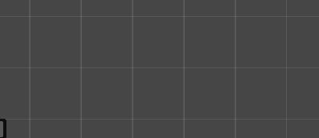

| 유니티 2D 게임에서 텍스쳐 PPU와 씬뷰의 격자 한칸의 관계는?  유니티(Unity)에서 씬 뷰에 보이는 저 **격자(Grid) 한 칸은 기본적으로 '1 유니티 단위(1 Unity Unit)'**를 의미합니다. 결론부터 말씀드리면, "한 칸이 곧 PPU"인 것은 아니지만, PPU 설정에 따라 스프라이트가 저 한 칸에 어떻게 들어가는지가 결정됩니다. 이 개념을 쉽게 이해하실 수 있도록 핵심 내용을 정리해 드릴게요. 1. Unity Unit vs PPU (Pixels Per Unit)
2. 예시로 이해하기만약 내가 가져온 캐릭터 이미지의 해상도가 64x64 픽셀이라고 가정해 보겠습니다.
3. 왜 이게 중요한가요?보통 2D 픽셀 아트 게임을 만들 때 PPU 설정이 매우 중요합니다.
팁: 만약 픽셀 게임을 만드신다면, 사용 중인 타일의 가로 픽셀 크기에 맞춰 스프라이트의 Pixels Per Unit 값을 수정해 보세요! 혹시 지금 작업 중인 아트셋의 픽셀 사이즈를 알려주시면, 적절한 PPU 값을 추천해 드릴까요? 2D 직교 좌표계로 설정한 상태에서는? 2D 직교 좌표계(Orthographic) 모드에서도 격자 한 칸은 여전히 1 Unity Unit입니다. 하지만 화면에 보이는 방식이 3D와는 조금 다릅니다. 직교 좌표계 환경에서 PPU와 카메라의 관계를 이해하면 작업이 훨씬 수월해집니다. 1. 격자 한 칸의 의미직교 좌표계에서 Camera의 Size 속성을 보면 이 격자의 개념이 명확해집니다.
2. '픽셀 퍼펙트(Pixel Perfect)'를 원하신다면?만약 픽셀 아트 게임을 만들고 계셔서 스프라이트가 격자에 딱딱 맞기를 원하신다면 다음 공식을 기억하세요.
3. 직교 좌표계 작업 팁
|